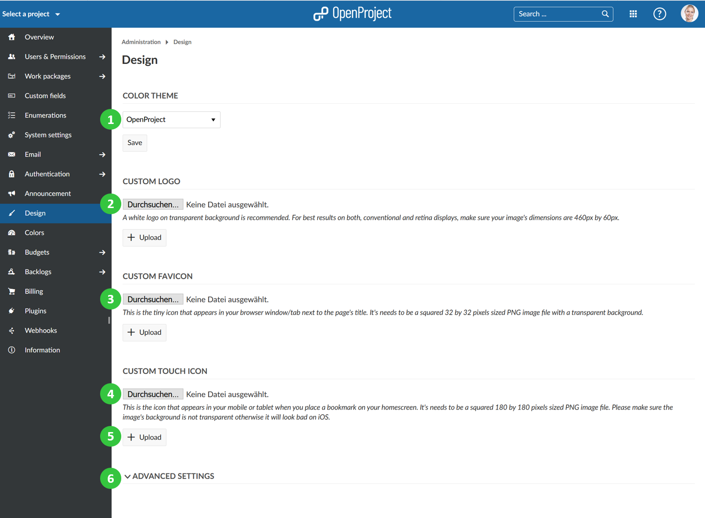
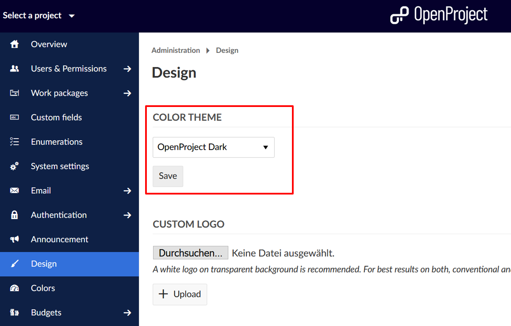
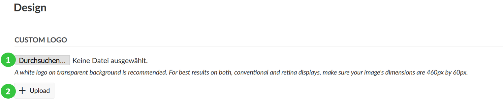
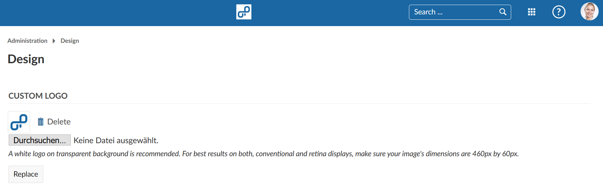
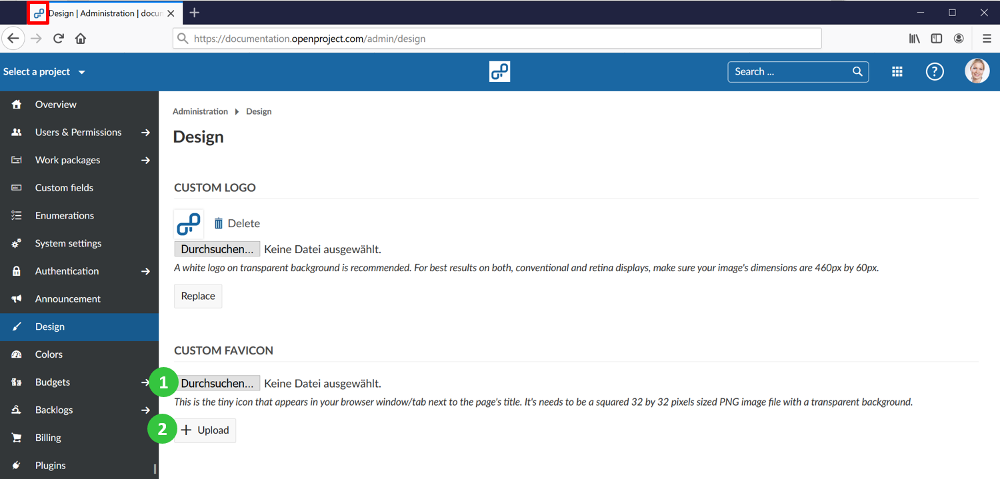
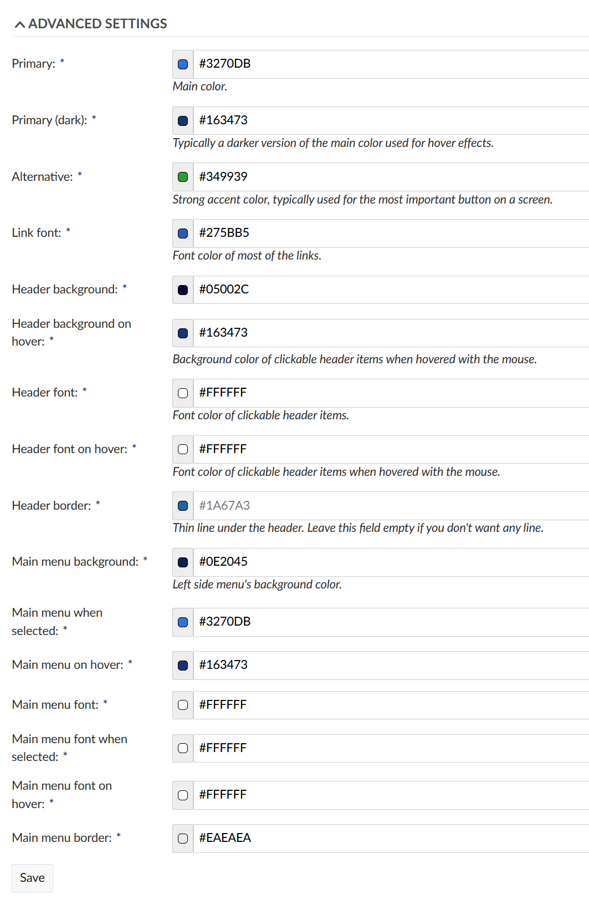

As an OpenProject premium feature you can replace the default OpenProject logo with your own logo. In addition, you can define your own color theme which allows you to implement your corporate identity in OpenProject.
Navigate to -> Administration -> Design in order to customize your OpenProject theme and logo.
The design page provides several options to customize your OpenProject Enterprise Edition:
Choose a default color theme: OpenProject, Light or Dark. Press the Save button to apply your changes.
Upload your own custom logo to replace the default OpenProject logo.

You can choose between the three default color themes for OpenProject:
Press the Save button to apply your changes. The theme will then be changed.

To replace the default OpenProject logo with your own logo, make sure that your logo has the dimensions 460 by 60 pixels. Select the Choose File button and select the file from your hard drive to upload it (1).
Click the Upload button to confirm and upload your logo (2).


To set a custom favicon to be shown in your browser’s tab, make sure you have a PNG file with the dimensions 32 by 32 pixels. Select the Choose File button and select the file from your hard drive to upload it (1).
Click the Upload button to confirm and upload your favicon (2).

To set a custom touch icon that appears on your smartphone’s or tablet’s homescreen when you bookmark a page, make sure you have a PNG file with the dimensions 180 by 180 pixels. Select the Choose File button and select the file from your hard drive to upload it.
Click the Upload button to confirm and upload your custom touch icon.
When you bookmark your OpenProject environment’s URL, you will see that the uploaded icon is used as a custom touch icon.
Aside from uploading logos and icons, you can also customize the colors used within your OpenProject environment.
To do this change the color values (entered as color hex code) in the Custom Colors section. In order to find the right hex code for a color, you can use a website, such as color-hex.com. You can see the selected color in the preview area next to the color hex code. Therefore, it is possible to see the selected color before saving the changes.

As soon as you press the Save button your changes are applied and the colors of your OpenProject environment are adjusted accordingly.